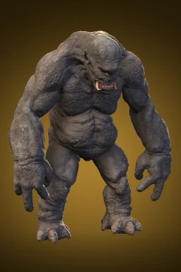
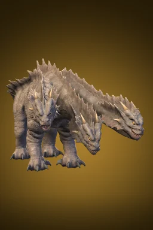
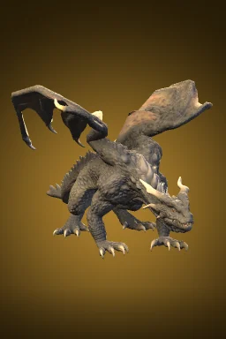
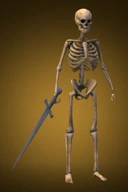
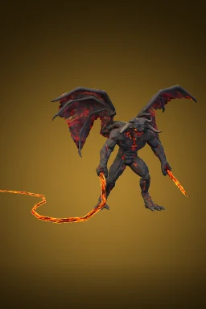
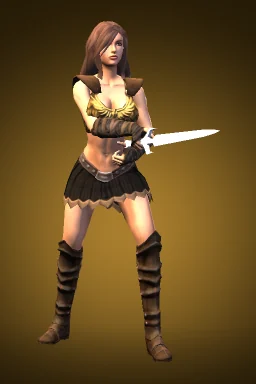
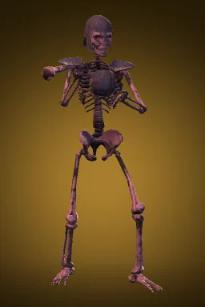
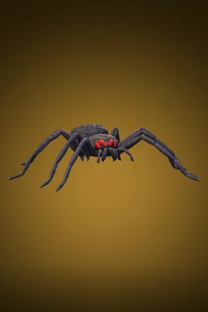

Warspire Wiki
Every unit, alliance, item and rule in Warspire.
Warspire is an auto-battler for 8 players. You buy units from your own shop, which draws on one pool of copies shared by all 8 players. You set them on your board, and your warband fights on its own against one rival each round. Everyone starts on 100 health; the last player standing takes the spire. This wiki is built from the game's own data, so every number on it is the number in play.
Start here
Browse the wiki
The commanders
You choose one commander in the preparation phase of round 10. It fights on your board and grows with your level. See How commanders work.


The aces
8 of the 10 tier 5 units are aces. Each is tied to one alliance and brings an extra effect while that alliance is active. See Aces.

Spire ColossusAce of Warden
Mire KingAce of Mirefolk
Deep BasiliskAce of Drowned
HourbladeAce of Cutthroat
Abyssal ArchonAce of Abyssal
Blood MatriarchAce of Oathbound
Soul TyrantAce of Soulbinder
DuskmotherAce of ShadeThe arenas
Every fight takes place in one of 5 arenas. See the arena list.


Most used rules
All of the rules are listed on the rules page.
Tables and calculators
Built from rules 2026.11.08.1 and content 2026.11.08.1.